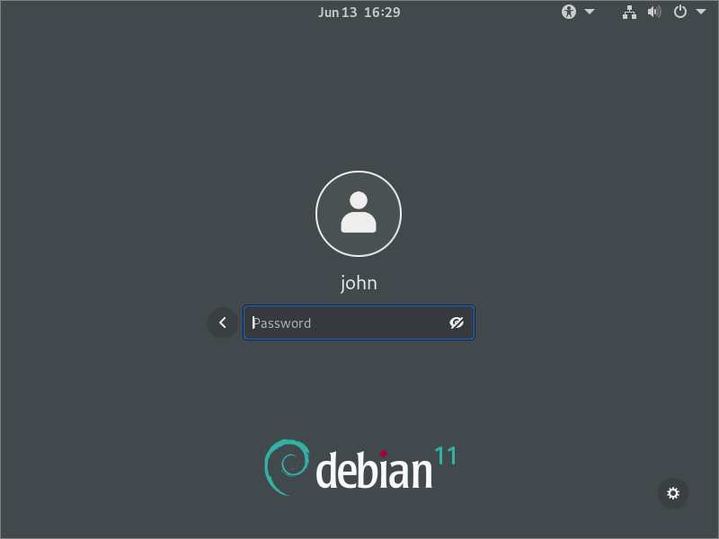
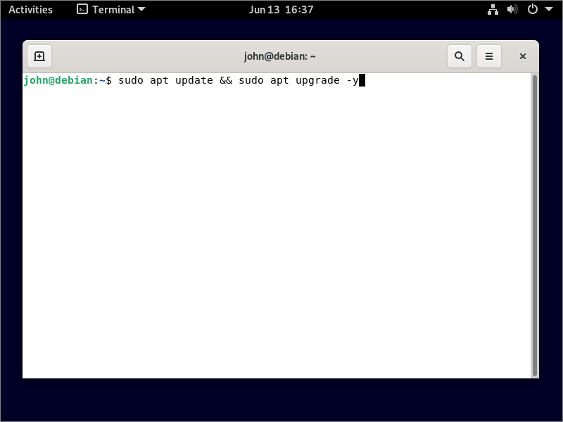
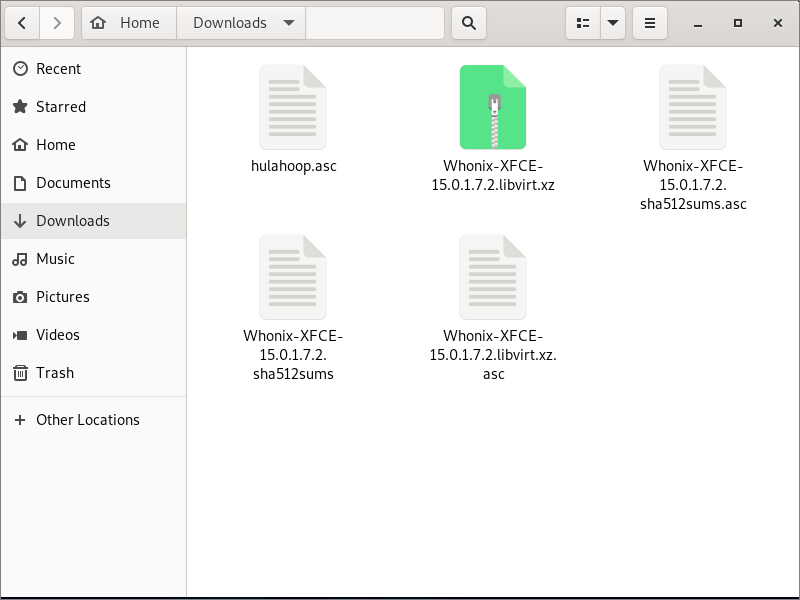

Practical Anonymity for Political and Religious Dissidents
This article demonstrates a practical approach to anonymity for political and religious dissidents. We install Linux with full disk encryption on a host computer. We then install KVM for virtualization, followed by Whonix. Whonix consists of two virtual machines: a Gateway VM, which channels all your communications over Tor, and a Workstation VM, where you do all your work. This arrangement strengthens your defenses against attempts to de-anonymize you.
1. Plan
We assume you start from a PC with Windows on it, or possibly another version of Linux.
Before you begin, you need to think about and fully understand the consequences of overwriting your operating system. Your original operating system will be completely gone. Any applications you have installed will be gone. All your existing files, photos, and documents will be gone. There will be no possibility of recovering.
You should copy any files you wish to keep to a DVD or USB stick before you overwrite your existing operating system, programs, and data.
Before you actually do anything practical, check also that your CPU supports virtualization. On Windows, do
Ctrl+Shift+Esc to bring up Task Manager. Go to the Performance tab. Check that the details include
the statement Virtualization: Enabled. You will also need to verify that you have a reasonably powerful CPU so that you can run the two Whonix virtual
machines, and you will also need to check that you have sufficient random-access memory (RAM). The Whonix website suggests some absolute minimum system requirements, but it is better if you have more than the bare minimum.
Finally, you need to inform yourself about the legalities and risks of using anonymization and censorship circumvention technologies in your country. As just one example, do you understand the risks of correlation attacks?
Take all reasonable precautions. Avoid downloading files from unknown sources. Do not install add-ons in Tor Browser. Disable JavaScript. Watch out for social engineering attempts. This article is only an introduction; a wealth of more advanced material is available on the Whonix wiki.
You may find that you need access to censored resources in order to complete this tutorial. If this happens to you, you may need to implement a temporary method of bypassing censorship in order to download the materials for the tutorial. Examples of anonymous methods would be using V2Ray or Trojan with a public-interest server, or using Tor with a public bridge.
2. Obtain Linux ISO
For your host operating system, we will give instructions for Debian and CentOS. (The process for Fedora would be similar to that for CentOS, and the process for Ubuntu would be similar to that for Debian.)
Note that CentOS 8 reaches end-of-life on December 31, 2021. Therefore Debian is recommended. Debian 10 is nicknamed “buster,” and Debian 11 is nicknamed “bullseye.”
Download the ISO file for Debian or CentOS from the distribution’s website.
You can verify checksums in Windows with the PowerShell Get-FileHash cmdlet. For example:
Get-FileHash -Algorithm SHA512 -Path C:\Users\john\Downloads\debian-10.9.0-amd64-DVD-1.iso
You can verify GPG signatures on Windows with Gpg4win.
3. Burn Linux ISO to DVD or USB Stick
You will need a blank DVD or USB memory stick.
On Windows, you can easily burn an ISO file to DVD. Insert your writable blank DVD into your PC’s DVD drive. Open Windows File Explorer. Locate your ISO file, right-click on the ISO file, and select Burn disk image.
For all other situations, you can burn the ISO file to the installation medium with Balena Etcher. Download and install Balena Etcher. Launch Balena Etcher, and burn your ISO file to your DVD or USB stick.
4. Change Computer BIOS to Boot from DVD or USB Stick
We are going to set the computer temporarily to boot from your DVD or USB stick instead of from the normal hard drive. We’ll also set a BIOS password to stop anyone else getting into the BIOS. Note that, as a matter of principle, you should not rely on any single security technique. For example, although we will set a BIOS password, you must also physically secure your computer to stop others from gaining access to it.
The procedure for getting into the BIOS/UEFI varies from model to model. The BIOS key set by your computer maker could be F1, F2, F10, F12, or DEL. You will need to consult the manufacturer’s manual or website to find out which key to press to get into the BIOS/UEFI.
Once you are into the BIOS, you should set a BIOS password, if you have not done so already. This prevents unauthorized users from accessing your BIOS/UEFI.
Now set your computer to boot from DVD or USB stick as a higher priority than your hard drive.
Boot the computer from your installation medium (the DVD or USB stick).
5. Install Linux
We will give instructions for installing Debian or CentOS with full disk encryption.
5.1. CentOS 8
In the first part of the installation, you will specify the parameters you want for the install.
- Select your language (e.g. English, United States), and click Continue.
- When the Installataion Summary screen appears, select Installation Destination.
- Select your hard drive, so that a check mark appears on it.
- Select Custom storage configuration.
- Click Done.
The Manual Partitioning screen appears.
For the mount points, click the link to create them automatically.
- For the / mount point, check the box for Encrypt.
- For the /boot mount point, check the box for Encrypt.
- For swap, check the box for Encrypt.
- Click Done.
- This is the part where you specify that you want encryption. A passphrase differs from a password in that it may contain spaces, as well as other characters. Make sure you remember the passphrase you define! Enter and confirm the disk encryption passphrase, and click Save passphrase.
- When the Summary of Changes appears, click Accept Changes.
Now we set up networking.
- Select Network & Host Name.
- Leave the Host Name at
localhost.localdomain. - Toggle the Ethernet interface to the ON position.
- Click Done.
In the final part of the installation process, the installer actually does the install on the encrypted disk, based on the parameters you specified earlier on.
- Click Begin Installation.
- Click Root Password.
- Enter and confirm your desired root password, and click Done.
- Click User Creation
- Enter your user full name, user name, password, and confirm password, and click Done.
The install takes 30 minutes or so.
When you get a message to say CentOS Linux is successfully installed, remove the installation DVD or USB. Click Reboot.
5.2. Debian 10+
In the first part of the installation, you will specify the parameters you want for the install.- Select your preferred language (e.g. English), and click Continue.
- Select your location (e.g. United States), and click Continue.
- Select your keyboard (e.g. American English), and click Continue.
- The installer sets up networking. Note that wired networking is more secure and private than wireless networking. After the installer sets up the networking,
enter a hostname (e.g.
debian), and click Continue. - Enter a network domain name (e.g.
local.local), and click Continue. - Enter and confirm your desired root password, and click Continue.
- Enter and confirm a non-root user (e.g.
john), and click Continue. - Enter a username (e.g.
john), and click Continue. - Enter and confirm your desired non-root password, and click Continue.
- After the clock set-up, specify your time zone (e.g.
Eastern), and click Continue.
Now you specify that you want full-disk encryption. You will be asked to choose a passphrase for your disk. A passphrase differs from a password in that it may contain spaces, as well as other characters. Make sure you remember the passphrase you set up!
- When the partition disks screen appears, use the down-arrow on your keyboard to reach the option Guided - use entire disk and set up encrypted LVM. Click Continue.
- Select the disk to partition, and click Continue.
- For new users, select All files in one partition (recommended for new users), and click Continue.
- When asked if you want to write the changes to disks and configure LVM, change the radio button selection to Yes, and click Continue.
- The installer now overwites the partition with random data to prevent meta-information leaks. This can take a while for large disks.
- When you are asked to enter and confirm a passphrase for disk encryption, choose a strong passphrase, and click Continue.
- Confirm the size of your volume group to use for partitioning, and click Continue.
- Select Finish partitioning and write changes to disk, and click Continue.
- When asked if you want to format the partitions and write the changes to disk, change the radio button selection to Yes, and click Continue.
In the third part of the installation process, the installer actually does the install on to the encrypted disk you specified in the second part, based on the parameters you specified in the first part.
- You don’t need a second DVD for the install, so when asked if you want to scan another CD or DVD, select No, and click Continue.
- When asked if you want to use a network mirror, select Yes, and click Continue.
- Select a nearby country for your local mirror, and click Continue.
- Enter a proxy server if you need one to reach the mirror (for most people it will be blank for none), and click Continue.
- When asked if you want to participate in the package usage survey, select No, and click Continue.
- For software selection, choose:
- Debian desktop environment
- GNOME
- Standard system utilities
- The package installation takes a while. When asked if you want to install the GRUB boot loader to the master boot record, put Yes, and click Continue.
- Select the hard disk where GRUB will be installed, and click Continue.
- When installation is complete, click Continue.
- Remove the installation DVD or USB.
6. Boot Computer
Whenever you boot your host computer from now on, you will need to enter the passphrase to unlock your disk.
The first time you boot a new CentOS installation, you need to accept the license agreement. Click License Information, check the accept box, click Done, then click Finish Configuration.
Log in with your user name and user password.
The first time logging into CentOS, you will see some welcome screens. Toggle Location Services to OFF, and Skip specifying accounts.
7. Make Non-Root User an Administrator
It is generally convenient to be able to issue administrative commands from your non-root user. We will therefore make the non-root user into a system administrator.
Assuming you are using GNOME desktop, hit the “super” key (the one which often has a Windows logo on it). You can alternatively click on the word Activities at the top left of the GNOME desktop.
Do a search for terminal. Select and launch the terminal application.
Temporarily switch from your non-root user to the root user by issuing the command:
su -
You will be prompted to enter the root password you chose when you installed the operating system.
Now add your user to the administrators’ group. Suppose the non-root user’s name is john. On CentOS, issue the command:
usermod -a -G wheel john
On Debian, issue the command:
usermod -a -G sudo john
The new group membership will not be effective until the next time john logs in.
You are still the root user at this point, so exit your root session:
exit
And exit the non-root session:
exit
Locate the power button at the top right of the GNOME desktop. Log out as the non-root user. (There should be no need to power off and restart the computer, but if
you run into problems running sudo commands, try rebooting.)
Now log back in again as the non-root user.
You should now be able to execute administrative commands in the terminal by prefixing them with the word sudo.
8. Update System
8.1. Update
Now is a good time to get your host system completely up to date for any software that has been updated since your ISO was created. Open the terminal application again, and issue the appropriate command(s).
On CentOS:
sudo yum update -y
On Debian:
sudo apt update && sudo apt upgrade -y

You will need to enter your user password to gain sudo privileges.
When the update process finishes, all software packages on your system will be up to date.
8.2. Install Firewall
You should install and configure a firewall on your host that blocks all outside attempts to connect to it (unless you need to allow them, for some reason).
On CentOS, check if firewalld is already installed (sudo systemctl status firewalld), and if not, then install and start it now:
sudo yum install firewalld -y
sudo systemctl enable firewalld
sudo systemctl start firewalld
Still on CentOS, remove unnecessary services from public access:
sudo firewall-cmd --permanent --zone=public --remove-service=ssh
sudo firewall-cmd --permanent --zone=public --remove-service=cockpit
sudo firewall-cmd --reload
sudo firewall-cmd --zone=public --list-all
On Debian (but see note below about problem with nftables and KVM):
sudo apt install nftables -y
sudo systemctl enable nftables
sudo systemctl start nftables
sudo nft add rule inet filter input ct state related,established counter accept
sudo nft add rule inet filter input iif lo counter accept
sudo nft add rule inet filter input counter drop
sudo su -c 'nft list ruleset > /etc/nftables.conf'
Note: Using your own nftables rules combined with rules inserted automatically by KVM can result in a bug whereby the guest has no networking or no
Internet access, or you get an error on the host saying table `filter' is incompatible, use 'nft' tool. If you run into this problem, it can be safer to
revert to using iptables and implement host firewall rules like this:
sudo iptables -A INPUT -m conntrack --ctstate ESTABLISHED,RELATED -j ACCEPT
sudo iptables -A INPUT -i lo -j ACCEPT
sudo iptables -P INPUT DROP
sudo ip6tables -A INPUT -m conntrack --ctstate ESTABLISHED,RELATED -j ACCEPT
sudo ip6tables -A INPUT -i lo -j ACCEPT
sudo ip6tables -P INPUT DROP
sudo apt install iptables-persistent -y
9. Install KVM
9.1 Check for Virtualization
Check again that your CPU supports virtualization. The CPU flag for Intel virtualization is vmx; the CPU flag for AMD virtualization is
svm. In a Linux terminal, enter the command:
grep -E '(vmx|svm)' /proc/cpuinfo
Make sure that one or the other shows up.
9.2. Install KVM
Install KVM and the virtual machine manager like this. On CentOS 8:
sudo yum install virt-manager qemu-kvm libvirt -y
On Debian 10+:
sudo apt install virt-manager qemu-kvm libvirt-daemon-system -y
Confirm that libvirtd is active and running:
sudo systemctl status libvirtd
To exit the status display, you may need to enter q for quit.
If libvirtd is not active and running, then enable and start it now:
sudo systemctl enable libvirtd
sudo systemctl start libvirtd
Add your non-root user to the group that can manage virtual machines:
sudo usermod -a -G libvirt john
Since you have just enabled virtualization, it is advisable to reboot at this stage rather than simply logging off and logging on again.
Assuming you are running the GNOME desktop, click Activities or press the “super”key on your keyboard. Search for virt. Select and
launch Virtual Machine Manager, the graphical user interface for KVM.
The Virtual Machine Manager starts up. Right-click on the line for QEMU/KVM. Select Details. Select the Virtual
Networks tab. Make sure the default device, virbr0, is active. If it is not active, then open a terminal and enter the command:
sudo virsh net-start default
In the graphical user interface, make sure also that virbr0 is set to Autostart on boot. If you have to manually check the box to specify autostart,
then also click the Apply button.
Close the Connection Details window. You can also close the Virtual Machine Manager for now.
10. Install Whonix
Whonix consists of two virtual machines: the Whonix-Gateway and the Whonix-Workstation. The Gateway runs Tor and acts as a gateway to the Internet. The Workstation, which is where you will do all your work, runs on a completely isolated network. All its communication outward is via the Gateway.
To learn more about Whonix (and security and anonymity in general), visit the Whonix wiki.
10.1. Install GPG
GNU Privacy Guard (GnuPG or GPG) is an open-source cryptographic software suite. It is used for encrypting, decrypting, and verifying communications. We will use it to verify the Whonix download in the next step.
On CentOS, open a terminal and issue the command:
sudo yum install gnupg
On Debian:
sudo apt install gnupg
10.2. Import Whonix Signing Key
Open Firefox on your host. Download the Whonix signing key by entering https://www.whonix.org/hulahoop.asc in the address bar. By default, it will be stored in your Downloads directory with the name
hulahoop.asc.
Check the fingerprint of the Whonix signing key:
cd ~/Downloads
gpg --keyid-format long --import --import-options show-only --with-fingerprint hulahoop.asc
The output should read as follows:
gpg: key 50C78B6F9FF2EC85: 1 signature not checked due to a missing key
pub rsa4096/50C78B6F9FF2EC85 2018-11-26 [SCEA]
Key fingerprint = 04EF 2F66 6D36 C354 058B 9DD4 50C7 8B6F 9FF2 EC85
uid HulaHoop
sub rsa4096/EB27D2F8CEE41ACC 2018-11-26 [SEA]
If the output looks as above, then import the key into your GPG keyring:
gpg --import hulahoop.asc
The output from that last command should read as follows:
gpg: key 50C78B6F9FF2EC85: 1 signature not checked due to a missing key
gpg: key 50C78B6F9FF2EC85: public key "HulaHoop" imported
gpg: Total number processed: 1
gpg: imported: 1
gpg: no ultimately trusted keys found
10.3. Download Whonix
In Firefox, navigate to the Whonix KVM page.
Scroll down to the section with the Whonix downloads. Download four files:
- The main Whonix download. It has a name such as
Whonix-XFCE-15.0.1.7.2.libvirt.xz. This is a large download of over 1 GB. - The OpenPGP Signature of the main Whonix download. It has the same file name as the Whonix download, except with asc at the end. For example,
Whonix-XFCE-15.0.1.7.2.libvirt.xz.asc. - The SHA512 hash of the downloads. It has a name such as
Whonix-XFCE-15.0.1.7.2.sha512sums. - The OpenPGP Signature of the SHA512 hash of the downloads. For example,
Whonix-XFCE-15.0.1.7.2.sha512sums.asc.
By default, all four files are saved in the same directory.
10.4. Verify Whonix Download
We continue to use Whonix with XFCE version 15.0.1.7.2 for our sample file names. The version number may have changed by the time you run this tutorial.
Use the signature for the SHA512 hash to check the SHA512 hash:
cd ~/Downloads
gpg --verify Whonix-XFCE-15.0.1.7.2.sha512sums.asc Whonix-XFCE-15.0.1.7.2.sha512sums
The output should include a line:
gpg: Good signature from "HulaHoop" [unknown]
Do not worry about the warning:
gpg: WARNING: This key is not certified with a trusted signature!
gpg: There is no indication that the signature belongs to the owner.
Display the expected SHA512 hash of the main download:
cat Whonix-XFCE-15.0.1.7.2.sha512sums
The output looks like this. The exact value of the hash will change for different versions of the Whonix download.
30314c419a2a209a52e0900aef7cac510324f4259dbf48ba2effe845b8cc02d4f5841e86d68ed30b50684df2acf41569fe9e5d0c3cbf60b5698a58caf532d78e
Whonix-XFCE-15.0.1.7.2.libvirt.xz
Now determine the actual SHA512 hash of the main download:
openssl sha512 Whonix-XFCE-15.0.1.7.2.libvirt.xz
It takes a few moments to run. Make sure that the expected sha512 hash and the actual sha512 hash are identical.
Now use the signature for the main Whonix download to verify the main Whonix download:
gpg --verify Whonix-XFCE-15.0.1.7.2.libvirt.xz.asc Whonix-XFCE-15.0.1.7.2.libvirt.xz
The output should include a line:
gpg: Good signature from "HulaHoop" [unknown]
Do not worry about the warning:
gpg: WARNING: This key is not certified with a trusted signature!
gpg: There is no indication that the signature belongs to the owner.
10.5. Extract Whonix
If all your verification is successful, then extract the files from the main download:
tar -xvf Whonix-XFCE-15.0.1.7.2.libvirt.xz
This gives the following eight files:
WHONIX_BINARY_LICENSE_AGREEMENTWHONIX_DISCLAIMERWhonix-Gateway-XFCE-15.0.1.7.2.qcow2Whonix-Workstation-XFCE-15.0.1.7.2.qcow2Whonix-Gateway-XFCE-15.0.1.7.2.xmlWhonix-Workstation-XFCE-15.0.1.7.2.xmlWhonix_external_network-15.0.1.7.2.xmlWhonix_internal_network-15.0.1.7.2.xml
10.6. Activate Virtual Networks
This step needs to be done only once, and not after every Whonix upgrade.
Determine the names of the virtual networks. They are defined by the network XML files you downloaded and extracted:
cat Whonix_external_network-15.0.1.7.2.xml
cat Whonix_internal_network-15.0.1.7.2.xml
The names will probably be Whonix-External and Whonix-Internal. You will need these names in a moment. The bridge names will probably be
virbr1 and virbr2.
Add the virtual networks for Whonix:
sudo virsh -c qemu:///system net-define Whonix_external_network-15.0.1.7.2.xml
sudo virsh -c qemu:///system net-define Whonix_internal_network-15.0.1.7.2.xml
Activate the new virtual networks now and after every boot:
sudo virsh -c qemu:///system net-autostart Whonix-External
sudo virsh -c qemu:///system net-start Whonix-External
sudo virsh -c qemu:///system net-autostart Whonix-Internal
sudo virsh -c qemu:///system net-start Whonix-Internal
To confirm all this, open the Virtual Machine Manager GUI. Right-click on the QEMU/KVM line. Select Details. Select the
Virtual Networks tab. You should see the two new networks have been added to the initial default virtual network.
10.7. Create the Gateway and Workstation Virtual Machines
When you launch the virtual machines, an error sometimes occurs, Requested operation is not valid: blkio device weight is valid only for bfq or cfq
scheduler. To prevent this error from happening, edit the file Whonix-Gateway-XFCE-15.0.1.7.2.xml. Delete the three lines:
<blkiotune>
<weight>250</weight>
</blkiotune>
Save the file. Also edit Whonix-Workstation-XFCE-15.0.1.7.2.xml. Remove the three lines:
<blkiotune>
<weight>250</weight>
</blkiotune>
Save the file.
In your terminal, issue the commands to create the Gateway and Workstation virtual machines, based on the XML definitions you downloaded:
sudo virsh -c qemu:///system define Whonix-Gateway-XFCE-15.0.1.7.2.xml
sudo virsh -c qemu:///system define Whonix-Workstation-XFCE-15.0.1.7.2.xml
10.8. Move Qcow2 Images
Move the virtual machine images into their expected directory:
sudo mv Whonix-Gateway-XFCE-15.0.1.7.2.qcow2 /var/lib/libvirt/images/Whonix-Gateway.qcow2
sudo mv Whonix-Workstation-XFCE-15.0.1.7.2.qcow2 /var/lib/libvirt/images/Whonix-Workstation.qcow2
10.9. Obtain Bridge Lines
In a repressive regime, direct connections to the Tor network are often blocked. It will be necessary to use bridges.
While you can use the built-in bridges, you will have the widest range of options if you can obtain some custom bridge lines.
Public custom bridges may be obtained in two ways:
- Visit https://bridges.torproject.org and follow the instructions.
- From a Gmail account, email
bridges@torproject.org, leaving the email subject empty and writingget transport obfs4in the email message body.
Technically knowledgeable users may also set up private custom Tor bridges. If someone has done this for you, they should give you the bridge line(s).
11. Launch Whonix
11.1. Start Gateway
Open the Virtual Machine Manager graphical user interface.
Select and start the Whonix-Gateway virtual machine. Open the virtual machine console.
The Whonix Setup Wizard appears. On part 1/2, read the instuctions, select Understood / Verstanden, and click Next. On part 2/2, read the instuctions, select Understood / Verstanden, and click Next. Click Finish.
Next, the Anon Connection Wizard appears. You have three choices:
- Connect
- Configure
- Disable Tor
In a country that does not censor the Internet, click Connect directly, and bypass the instructions for configuring bridges and a proxy.
In a country that censors the Internet, direct connections to Tor may be blocked, and most likely you will need to click Configure. On the next screen, affirm that you need bridges. There are three possibilities:
- Connect with the provided (public) obfs4 bridges. These are fast and work in most countries.
- Connect with the provided (public) meek-azure bridges. These are slow but reliable.
- Enter custom (public or private) bridges. You need to obtain the bridge line(s) in advance (see section 10.9 above).
In China, (1) meek-azure, (2) private obfs4 bridges, and (3) a very few custom public obfs4 bridges will work.
Make your choice for bridges, and click Next.
Now a screen appears asking if you need to use a proxy before connecting to the Tor network. We will assume that you do not have a proxy at this stage. Click Next.
A summary is displayed. Click Next.
Tor bootstraps. Especially when using meek-azure bridges, this can take several minutes. When bootstrapping reaches 100%, click Finish.
Now the Whonix system check runs. This is a bash script that checks system status. It runs in the background and takes approximately three minutes.
If your software need to be updated, you will be prompted to do so.
If you were prompted to do an update, then open a terminal from the terminal icon in the menu bar, and enter the command(s) specified.
The update itself happens over Tor, so it may be slow.
You may be prompted to reboot the virtual machine at the end of the update process. If so, wait for the updates to be absolutely complete, then reboot as follows. Click the XFCE menu button in the menu bar, then click the green-and-white exit sign, then shut down. Restart from the Virtual Machine Manager.
The out-of-the-box username and password are:
- Default username:
user - Default password:
changeme
Change the password to something only you know. In the terminal, issue the command:
passwd
Enter your current password, then enter and confirm your new password.
Minimize the Gateway virtual machine, but leave it running.
Setting up your Tor connection is the only work you will do in the Gateway. From now on, you will use the Workstation for everything.
11.2. Start Workstation
The Workstation is where you will do your actual work. It has no direct connection to the outside world, forcing the Workstation to send its traffic through the Tor Gateway.
Select and start the Whonix-Workstation virtual machine. Open the virtual machine console.
The Whonix Setup Wizard appears. On part 1/2, read the instuctions, select Understood / Verstanden, and click Next. On part 2/2, read the instuctions, select Understood / Verstanden, and click Next. Click Finish.
Now the Whonix system check runs. This is a bash script that checks the system status. It runs in the background and takes approximately three minutes. If your software need to be updated, you will be prompted to open a terminal from the menu bar and enter the specified command(s). The update itself happens over Tor, so it may be slow.
You may be prompted to reboot the virtual machine at the end of the update process. If so, wait for updates to be absolutely complete, then reboot as follows. Click the XFCE menu button in the menu bar, then click the green-and-white exit sign, then shut down. Restart from the Virtual Machine Manager.
Here is a screenshot of the Whonix Workstation desktop:
The out-of-the-box username and password are:
- Default username:
user - Default password:
changeme
Change the password to something only you know. In the terminal, issue the command:
passwd
Enter your current password, then enter and confirm your new password.
It is often convenient to maximize the Workstation, so that the experience resembles working on an unvirtualized desktop. You can even expand the Workstation into full-screen mode with the button at the top right of the desktop. To get out of full-screen mode, look for the tiny button at the center top of the full-screen desktop.
11.3. Check Tor
To check your functionality, from the XFCE menu select the Web Browser. The Whonix version of Tor Browser appears. Visit https://check.torproject.org. You should see a message: Congratulations. This browser is configured to use
Tor.
11.4. Disable JavaScript
If you want to maximize your security, then disable JavaScript.
There are two ways to disable JavaScript in Tor Browser. The first way is easier to change; the second is safer.
For method #1, you click the shield icon to the right of the URL bar, then click Advanced Security Settings. Increase the security level to Safest. The shield icon turns from an outline into a solid color.
For method #2, you navigate to about:config. Confirm that you accept the risk of voiding your warranty. Search for javascript, and set
javascript.enabled to false.
Some websites will not render properly with JavaScript disabled. You may need to make a judgment call as to whether you trust a site enough to temporarily reenable JavaScript while you visit it.
For the pros and cons of enabling JavaScript or using the NoScript add-on to selectively whitelist sites, see the Whonix wiki JavaScript discussion.
11.5. Troubleshooting
If you experience any difficulties operating Whonix, consult the Whonix KVM page or visit the Whonix forums.
12. Next Step
For additional means to overcome censorship, read How to Connect to a Proxy Before Tor in Whonix.
Updated 2021-07-03